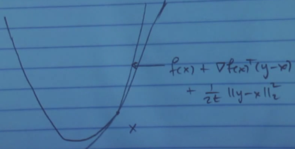
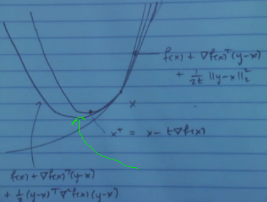
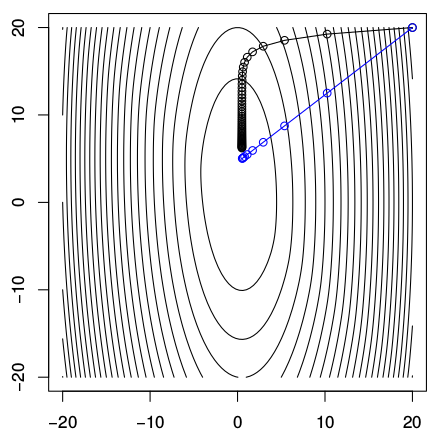

Kısıtlanmamış bir pürüzsüz optimizasyon problemini düşünelim [6, 6:00],
$$ \min f(x) $$
Baktığımız $f$'in iki kez türevi alınabilir olduğunu düşünelim. Hatırlarsak gradyan inişi nasıl işliyordu? Alttaki gibi,
$$ x^{k} = x^{k-1} - t_k \cdot \nabla f(x^{k-1}), k=1,2,... $$
Bir başlangıç $x^{(0)} \in \mathbb{R}^n$ seçiliyor ve üstteki ardı ardına işletiliyor, her adımda negatif gradyan yönünde $t_k$ boyunda adım atılıyor.
Kıyasla Newton metotu alttakini işletir,
$$ x^{k} = x^{k-1} - \left( \nabla^2 f(x^{(k-1)}) \right)^{-1} \nabla f(x^{k-1}), k=1,2,... $$
ki $\nabla^2 f(x^{(k-1)})$ $f$'in $x^{(k-1)}$ noktasındaki Hessian'ı. Yani $t_k$ boyunda eksi gradyan yönünde gitmek yerine gradyanin "negatif Hessian'ı yönünde" gideceğiz. Dikkat edersek bu yöntemde adım büyüklüğü kavramı yok, seçilen yönde tam bir adım atılıyor.
Newton metotunu nasıl yorumlamak gerekir? Gradyan inişini hatırlarsak, bir fonksiyon $f$'i alalım, ve onu $x$ noktasında karesel olarak yaklaşıklamasını alıyorduk,

Hessian nerede? Aslında var, ama birim matris $\frac{1}{2t} I$ olarak alındı. Alttaki resimde Newton metotu için yaratılan yaklaşıklamayı görüyoruz, bu büyük ihtimalle daha iyi bir yaklaşıklama olacak çünkü karesel açılımda daha fazla bilgi kullanıyor, bu sefer formülde $\nabla^2 f(x)$ ile Hessian da var.

Bu yeni yaklaşıklama üzerinden $x - (\nabla^2 f(x))^{-1}\nabla f(x)$ ile adım atınca belki yeşil okla gösterilen yere geleceğiz, bu daha iyi bir nokta olabilecek. Atılan adım formülünün resimdeki karesel formun minimize edicisi olduğunu görmek zor değil.
Gradyan inişi ve Newton metotu adımları arasındaki farkı görmek için örnek bir fonksiyona bakalım, $f(x) = (10 x_1^2 + x_2^2)/2 + 5 \log (1+e^{-x_1 - x_2})$. Fonksiyonu kontur grafiğini basınca alttaki gibi çıkıyor,

Siyah çizgi gradyan inişi, mavi Newton. Aynı yerden başlattım, ve gördüğümüz gibi minimal noktaya doğru çok farklı yollar takip ediyorlar. Karşılaştırması kolay olsun diye her iki tarafta atılan adım büyüklüklerini aynı tutmaya uğraştım. Graydan inişinin attığı adımların yönünün niye böyle olduğu gayet bariz, tüm adımlar görüldüğü gibi o noktadaki kontura dikgen, ki bu gradyanın tanımıdır zaten, bir noktadaki gradyan oradaki konturun teğetine diktir / normaldir.
Newton tamamen farklı bir şekilde gidiyor. Resimde tüm adımlar tek bir çizgide gibi duruyor ama aslında değil, başka bir yerden başlatsaydım bazen zigzaglı bile gidilebileceğini görürdük [6, 13:40]. Newton'un adımlarını yorumlamanın görsel olarak zihinde hayal etmenin iyi bir yolu onun her adımda bir küre, bir balon yarattığını düşünmek, ve o balonun gradyanina göre adım atmak.
Dersin geri kalanında Newton metotunda geriye çizgisel iz sürme (backtracking) yöntemini göreceğiz, ki "Newton metotu" denince aslında bu çeşitten bahsedilir, üstteki bahsettiğimize "pür Newton" adı veriliyor. Sonra bazı yakınsama özelliklerine bakacağız, ardından Newton metotunun bir çeşidi, eşitlik kısıtlamalı Newton metotunu göreceğiz. Eğer zaman kalırsa Newton-umsu (quasi-Newton) metotlara da bakmak istiyorum.
Newton metotuna bakmanın bir diğer yolu nedir? Onun her adımda bir karesel açılımı minimize ettiğini biliyoruz. Bir diğeri [6, 17:04] birinci derece optimalite şartını lineerize etmek. Biz $x$'teyiz diyelim, öyle bir yön $v$ arıyoruz ki o yönde bir adım atınca gradyan sıfır hale gelsin, $\nabla f(x+v)=0$. Bu genel bir ifade değil mi, ayrıca $v$ bağlamında lineer, $x$ sabit. Şimdi bu gradyanin lineer yaklaşıklamasını yaparsak doğal olarak Hessian'lı ifadeye eriseceğiz,
$$ 0 = \nabla f(x+v) \approx \nabla f(x) + \nabla^2 f(x) v $$
Ve ustteki formulu $v$ icin cozersek, bu bizi tekrar daha once gosterdigimiz Newton adimina goturuyor, $v = - \left( \nabla^2 f(x) \right)^{-1} \nabla f(x)$
Bu metotun tarihi bir arka planı da var, İsaac Newton bizim bugün Newton metotu dediğimiz yöntemi minimizasyon için değil, kök bulmak için keşfetti. Düşündü ki gayrı-lineer bir denklemin çözümlerini bulmak istiyorsan böyle bir metot gerekli. Tek boyutta düşünelim, mesela bir $g$ var, onun köklerini bulmak istiyoruz, o zaman Newton metotu kullan. Hatta genel fonksiyonlar için bile değil, polinomlar için bu yöntemi bulmuştu. Rhapson, bir diğer bilimci, aynı şekilde, aynı metotu düşündü. O sebeple bu metota bazen Newton-Rhapson adı verildiğini de görebilirsiniz. Çok sonraları bilimciler bu metotu minimizasyon için kullanmayı akıl etti, gradyanı sıfıra eşitliyerek. Bu kullanım çoğunlukla Simpson'a atfedilir.
Devam edelim, Newton adımının önemli bir özelliği onun ılgın değişmezliği (affine ınvariance). Bu ne demek? Bir lineer transformasyona bakalım. Diyelim ki $f,x$ üzerinden Newton adımı hesaplıyorken ben gelip diyorum ki "$x$ üzerinde değil yeni bir değişken $y$ üzerinden bunu yapmanı istiyorum" ve formül $x = Ay$, ve $g(y) = f(Ay)$. O zaman $g$ üzerinde Newton adımları neye benzer?
[devam edecek]
Eski Anlatım
Newton birazdan bahsedeceğimiz yöntemi tek boyutlu problemler için kullandı [2]. Rhapson adlı bilimci yöntemi çok boyutlu problemler için genişletti. Biz bu yönteme optimizasyon çerçevesinde bakacağız. Konunun tarihinden biraz bahsetmek istiyorum, bu dersi öğretmeye başladığımda 1986 senesiydi, Newton'un metodunu nasıl gördüğümüz o zamandan beri değişime uğradı. NM o zamanlar son başvurulan metot diye öğretiliyordu, çünkü metodu kullanmak için "büyük" bir denklem sistemi çözmek gerekiyordu, 500 x 500 bir sistem mesela. Bugüne gelelim artık NM ilk başvurulan metot haline geldi, 50,000 x 50,000 boyutlarında bir sistem çözmek "yetiyor" ve böyle bir sistem artık idare edilebilen bir boyut haline geldi. Yani hesapsal kapasite NM'in optimizasyon alanında oynadığı rolü tamamen değiştirdi.
Diğer bir faktör ileride öğreneceğimiz iç nokta (interior-point) metotlarının Newton'un metodunu kullanıyor olmaları. İç nokta metotları içbükey optimizasyonda çok popüler, onlar için NM gerekiyor, bu da NM'in popülaritesini arttırıyor.
NM nedir? Elimde bir kısıtlanmamış (unconstrained) problemim var diyelim,
$$ \min f(x), \quad \textrm{ öyle ki } \quad x \in X = \mathbb{R}^n $$
Bir Taylor açılımı yapabiliriz,
$$ f(x) \approx f(\bar{x}) + \nabla f(\bar{x})^T (x-\bar{x}) + \frac{1}{2} (x-\bar{x})^T F (x-\bar{x}) $$
ki $F$ Hessian matrisi. Üstteki formüle $h(x)$ diyelim. Böylece bir karesel model ortaya çıkartmış oldum, formülün sağ tarafındaki çarpım onu karesel yapıyor, ve şimdi onu kesin olarak çözmek istiyorum. Bunu nasıl yaparım? Formülün gradyanını sıfıra eşitleyebilirim. Üstteki fonksiyonun $x$'teki gradyanı nedir?
Gradyanı $x$'e göre aldığımızı unutmayalım, $h(x)$'in ikinci terimi $\nabla f(\bar{x})^T$ bir sabit sayı, ikinci gradyan alınırken sıfırlanır, ve tüm ikinci terim sıfırlanır. Üçüncü terimin gradyanını almak bir nevi $\frac{\partial (x^TAx)}{\partial x} $ almak gibi [1], $F$ belli bir noktadaki ikinci türev matrisi olduğu için $A$ gibi bir sabit matris kabul edilebilir, $A$ simetrik olunca gradyan $2Ax$ sonucunu veriyordu, $F$ simetrik, o zaman üçüncü terimde $F$ kalır, 2 ve $1/2$ birbirini iptal eder, sonuç
$$ \nabla h(\bar{x}) = \nabla f(\bar{x}) + F(\bar{x})(x-\bar{x}) $$
İki üstteki karesel yaklaşıksal ifadenin gradyanı bu işte. Onu sıfıra eşitleriz ve çözeriz. $F$ tersi alinabilir bir matristir, o zaman
$$ \nabla h(\bar{x}) = \nabla f(\bar{x}) + F(\bar{x})(x-\bar{x}) = 0 $$
$$ (x-\bar{x}) = -F^{-1} \nabla f(\bar{x}) $$
Üstteki ifadeye $d$ diyebilirim, ve bu $d$ benim Newton yönüm olarak görülebilir, yön derken optimizasyon bağlamında minimuma giden yön.
Bu bizi gayet basit 4 adımlık bir algoritmaya taşıyor,
0) $x^0$ verildi, bu başlangıç noktası, $k = 0$ yap.
1) $d^k = -F(x^k)^{-1} \nabla f(x^k)$. Eğer $d^k=0$ ise dur.
2) $\alpha^k = 1$ adım boyu seç
3) $x^{k+1} = x^k + \alpha^k d^k$, $k = k + 1$ yap, ve 1. adıma geri dön.
Bu metodun önemli bir özelliğinin her adımda sadece bir lineer sistemi çözmek olduğunu görüyoruz (tersini alma işlemi). Bir lineer sistemi çözmek kolay mıdır? Sisteme göre değişir, 100 x 100 sistem, problem yok. 10,000 x 10,000 yoğun bir sistem var ise (seyrek matrisle temsil edilen lineer sisteme nazaran) işimiz daha zor olacaktır. Bu tür sistemlerde Gaussian eliminasyon işlemeyebilir, bir tür özyineli metot gerekli. Demek istediğim Newton yönteminin darboğazı bir lineer denklem sistemini her seferinde sıfırdan başlayarak çözmek, ve bunu her döngüde yapmak.
Fakat bu çözümün bize pek çok şey kazandırdığını da görmek lazım; bahsedilen sistemi çözmek bize pek çok bilgi kazandırıyor çünkü çözülen problem içinde 1. ve 2. türev bilgisi var. Bu bilgi minimizasyon açısından daha akıllıca adım atılabilmesini sağlıyor.
Metot Hessian'ın her adımda tersi alınabilir olduğunu farzediyor, bu her zaman doğru olmayabilir. O sebeple bunun doğru olduğu türden problemler ile uğraşacağız, ya da Hessian'ın tersi alınabilir olmasını sağlayan mekanizmaları göreceğiz. $F$'nin özünü bozmadan değiştirerek tersi alınabilir olmasını sağlayan yöntemler var.
Ayrıca hedef her adımda fonksiyonunu oluşturduğumda bu fonksiyonun azalma garantisi yok. Öyle ya akıllı bir algoritmanin her adımda hedef fonksiyonumu daha iyiye götürdüğümü düşünebilirdim, ama şu anda kadar gördüklerimiz ışığında, bunun garantisi yok. Bu konuya sonra değineceğiz.
Bir diğer nokta 2. adımın çizgi arama ile genişletilebilmesi [bu konuya altta baska kaynaklardan deginiyoruz]
NY'nin en çekici tarafı, eğer yakınsama (convergence) mümkün ise bu yakınsamanın çok hızlı bir şekilde olması, ki bu iyi. Bu konuya gelmeden metodun bazı ek özelliklerini görelim.
Terminoloji: bir matrise SPD denir eger matris simetrik, pozitif kesin ise (simetric positive-definite).
Teklif (Proposition) 1:
Eğer $F(x)$ SPD ise $d \ne 0$, o zaman $d$ $\bar{x}$ noktasında bir iniş yönüne işaret eder. İniş yönü olması demek, eğer makul ufak bir adım çerçevesinde gidilen noktada $f$'in değerinin o an olduğumuz noktadan daha az olması demektir.
Nasıl ispatlarım? Önceki dersten hatırlarsak, eğer yönüm gradyan ile negatif iç çarpıma sahip ise, o zaman yönüm kesinlikle bir iniş yönüydü.
Teori
Diyelim ki $f(x)$ fonksiyonu $\bar{x}$ noktasında türevi alınabilir halde [2, sf. 9]. Eğer elimizde $\nabla f(\bar{x})^T d < 0$ sonucunu veren bir $d$ vektörü var ise, öyle ki her yeterince küçük $\lambda > 0$ için $f(\bar{x}+\lambda d) < f(\bar{x})$ olacak şekilde, o zaman $d$ bir iniş yönüdür.
İspat
Taylor açılımı ile yönsel türev tanımına bakarsak,
$$ f(\bar{x} + \lambda d ) = f(\bar{x}) + \lambda \nabla f(\bar{x})^T d + \lambda ||d|| \alpha(\bar{x},\lambda d) $$
öyle ki $\alpha(\bar{x},\lambda d) \to 0$, $\lambda \to 0$ olurken. Not: Norm içeren üçüncü terimdeki $\lambda ||d|| \alpha(\bar{x},\lambda d)$ ifadesi Taylor serisinin artıklı tanımından geliyor. Detaylar için [3, sf. 360]'a bakılabilir.
Üstteki ifadeyi tekrar düzenlersek,
$$ \frac{f(\bar{x} + \lambda d) - f(\bar{x})}{\lambda} = \nabla f(\bar{x})^T + ||d||\alpha(\bar{x},\lambda d) $$
$\nabla f(\bar{x})^T d < 0$ olduğuna göre (aradığımız şart bu) o zaman, ve $\alpha(\bar{x},\lambda d) \to 0$, $\lambda \to 0$ iken, her yeterince küçük $\lambda > 0$ için $f(\bar{x} + \lambda d)-f(\bar{x}) < 0$ olmalıdır, yani her hangi bir yönde atılan adım bir önceki $f$ değerinden bizi daha ufak bir $f$ değerine götürmelidir.
Ana Teklif'e dönelim. Newton adımınıdaki SPD $F$ için $0 < d^T \nabla f$ olduğunu göstermemiz lazım (ki böylece iniş yönü olduğunu ispatlayabilelim, bir önceki teori),
$$ d = -F^{-1} \nabla f(\bar{x}) $$
demiştik, her iki tarafı $\nabla f(x)$ ile çarpalım,
$$ d \nabla f(x) = -\nabla f(x) F^{-1} \nabla f(x) $$
Eşitliğin sağ tarafındaki ifade hangi şartlarda eksi olur? Eğer $F$ matrisi pozitif kesin ise değil mi? Genel matrislerden hatırlarsak, matris $A$ ve bir vektör için $v$ eğer $A$ pozitif kesin ise $v^TAv > 0$. Daha önce $F$'nin pozitif kesin olduğunu söylemiştik, o zaman bir şekilde eğer $F$ pozitif kesin olmasının sadece ve sadece $F$'nin tersinin pozitif kesin olmasına bağlı olduğuna gösterebilirsem amacıma ulaşabilirim.
Bunu yapmak aslında pek zor değil. Biliyorum ki $F(x)$ SPD. Simdi herhangi bir vektor $v$ icin
$$ 0 < v^T F(x)^{-1}v $$
ifadeyi şöyle genişletelim, $F(x)F(x)^{-1}$ eklemek hiçbir şeyi değiştirmez çünkü bu çarpım birim matristir,
$$ v^T F(x)^{-1}v = v^T F(x)^{-1} F(x)F(x)^{-1} v > 0 $$
Genişlemiş ifadenin harfiyen pozitif olduğunu biliyorum, iki üstteki tanımdan. Ama şimdi üstteki ifadeye farklı bir şekilde bakarsak,
$$ v^T F(x)^{-1}v = \underbrace{v^TF(x)^{-1}} F(x) \underbrace{F(x)^{-1} v} > 0 $$
İşaretlenen bölümlerin birer vektör olduğunu görebiliriz, bu durumda $v^TAv > 0$ pozitif kesinlik formülü farklı bir $v$ için hala geçerlidir, o zaman ortadaki $A$, bu durumda $F(x)$ pozitif kesin olmalıdır.
Örnek 1
$f(x) = 7x - \ln(x)$ olsun. O zaman $\nabla f(x) = 7 - \frac{1}{x}$ ve $F(x) = f"(x) = \frac{1}{x^2}$. Bu fonksiyonun özgün global minimumunun $x^* = 1/7 = 1.428..$ olduğunu kontrol etmek zor değil. $x$ noktasındaki Newton yönü
$$ d = -F(x)^{-1} \nabla f(x) = -\frac{f'(x)}{f"(x)} = -x^2 \left( 7 - \frac{1}{x} \right)= x - 7x^2 $$
Newton yöntemi ${ x^k }$ serisini üretecek, öyle ki
$$ x^{k+1} = x^k + ( x^k - 7(x^k)^2 ) = 2x^k - 7(x^k)^2 $$
Altta farklı başlangıç noktalarına göre üretilen serileri görüyoruz. Yakınsamanın hangi değere doğru olduğu bariz, ve global minimum da o değer zaten.
import pandas as pd
pd.set_option('display.notebook_repr_html', False)
pd.set_option('display.max_columns', 20)
pd.set_option('display.max_rows', 30)
pd.set_option('display.width', 82)
pd.set_option('precision', 6)
df = pd.DataFrame(index=np.arange(11))
def calculate_newton_ex1(x):
arr = []
for i in range(11):
arr.append(x)
x = 2*x - 7*x**2
if (x > 1e100): x = np.inf
if (x < -1e100): x = -np.inf
return arr
df['1'] = calculate_newton_ex1(1.0)
df['2'] = calculate_newton_ex1(0.0)
df['3'] = calculate_newton_ex1(0.1)
df['4'] = calculate_newton_ex1(0.01)
print (df)
1 2 3 4
0 1.000000e+00 0.0 0.100000 0.010000
1 -5.000000e+00 0.0 0.130000 0.019300
2 -1.850000e+02 0.0 0.141700 0.035993
3 -2.399450e+05 0.0 0.142848 0.062917
4 -4.030157e+11 0.0 0.142857 0.098124
5 -1.136952e+24 0.0 0.142857 0.128850
6 -9.048612e+48 0.0 0.142857 0.141484
7 -5.731417e+98 0.0 0.142857 0.142844
8 -inf 0.0 0.142857 0.142857
9 -inf 0.0 0.142857 0.142857
10 -inf 0.0 0.142857 0.142857
Örnek 2
Bu örnekte iki değişkenli bir fonksiyon görelim. Global minimum $(1/3,1/3)$. Bakalım bu değeri bulabilecek miyiz?
$f(x) = -\ln( 1 - x_1 - x_2) - \ln x_1 - \ln x_2$
$$ \nabla f(x) = \left[\begin{array}{r} \frac{1}{1-x_1-x_2} - \frac{1}{x_1} \\ \frac{1}{1-x_1-x_2} - \frac{1}{x_2} \end{array}\right] $$
$$ F(x) = \left[\begin{array}{rr} (\frac{1}{1-x_1-x_2})^2 - (\frac{1}{x_1})^2 & (\frac{1}{1-x_1-x_2} )^2 \\ (\frac{1}{1-x_1-x_2} )^2 & (\frac{1}{1-x_1-x_2})^2 - (\frac{1}{x_2})^2 \end{array}\right] $$
import numpy.linalg as lin
df = pd.DataFrame(index=np.arange(11))
def calculate_newton_ex2(x):
arr = []
for i in range(8):
arr.append(x)
x1,x2 = x[0],x[1]
F = [[(1.0/(1.0-x1-x2))**2 + (1.0/x1)**2.0, (1.0/(1.0-x1-x2))**2.0],
[(1.0/(1.0-x1-x2))**2, (1.0/(1.0-x1-x2))**2.0 + (1.0/x2)**2.0]]
F = np.array(F)
Df = [[1.0/(1.0-x1-x2) - (1.0/x1)], [1.0/(1.0-x1-x2)-(1.0/x2)]]
Df = np.array(Df)
d = np.dot(-lin.inv(F),Df)
x = x + d.flatten()
return np.array(arr)
res = calculate_newton_ex2([0.85,0.05])
print (res)
[[0.85 0.05 ]
[0.717 0.097]
[0.513 0.176]
[0.352 0.273]
[0.338 0.326]
[0.333 0.333]
[0.333 0.333]
[0.333 0.333]]
[diğer yakınsama konusu atlandı]
Dikkat edilirse şimdiye kadar dışbükeylik (convexity) farzını yapmadık, sadece Hessian matrinin tersi alınabilir olduğunu farzettik.
Devam edersek, özyineli şekilde güncelememizi yaparken Hessian'ın eşsiz olduğu bazı noktalara gelmiş olabiliriz. Bu olduğunda çoğu yazılım bu durumu yakalayacak şekilde yazılmıştır, "yeterince eşsiz" Hessian matrislere önceden tanımlı ufak bir $\epsilon$ çarpı birim matrisi kadar bir ekleme yaparlar, böylece tersin alınamama durumundan kurtulunmuş olur. Bu metotlara Newton-umsu (quasi-Newton) ismi de veriliyor.
Eskiden Newton-umsu metotlar koca bir araştırma sahasıydı. Benim bildiğim kadarıyla tarihte 15 sene kadar geriye gidersek, üstteki görüldüğü gibi her adımda büyük bir denklem sistemi çözmek istemiyoruz, $x$ noktasındayım, Hessian işliyorum, Newton yönümü buluyorum, adım atıyorum, yeni bir noktadayım. Newton-umsu metotlarda bu yeni noktada sil baştan bir Hessian işlemek yerine bir önceki adımdaki işlenen Hessian sonuçlarını, bir şekilde, az ek işlem yaparak sonraki adımda kullanmaya uğraşıyorlar. Aslında pek çok farklı Newton-umsu metot var, hepsi farklı şekilde Newton metotundan farklı (!)
[atlandı]
Not: Hocanın söylediklerine ek [4, pg. 522]'de belirtildiği gibi Hessian'ın silbaştan yaratılması yerine güncellenmesi aslında paradoksal bir şekilde daha iyi optimizasyon yapılmasını sağlayabiliyor. Newton yönünün iniş yönü olması için $H$ pozitif kesin olmalıdır, fakat minimum noktasından uzaktaki yerlerde bunun garantisi yoktur. Yani gerçek Hessian ile gerçek Newton adımını atmak bizi fonksiyonun arttığı yerlere götürebilir. Newton-umsu metotların esprisi pozitif kesin bir şekilde başlamak ve inişe giderken azar azar $H$'yi yaklaşıksal şekilde öyle güncellemek ki $H$ hep pozitif kesin kalsın.
[teori 1.1 ispatı atlandı]
Newton metodunun eğer başlangıç noktası nihai minimuma yakınsa iyi yakınsaklık özellikleri var. Fakat eğer sonuca uzaktan bir yerden başlamışsak yakınsaklık garantisi yok. Geldiğimiz yeni noktada Hessian eşsiz olabilir. Bu sebeple metot sürekli iniş özelliğine (descent property) sahip olmayacaktır, yani $f(x_{x+1}) \ge f(x_k)$ olabilir, ve yakınsaklık garantisi bu durumda kaybolur [5, sf. 167]. Fakat bu algoritmayı biraz değiştirerek sürekli iniş özelliğine sahip olmasını sağlayabiliriz.
Teori
$x_1,x_2,...$ ya da kısaca ${x_k}$ Newton'un metodu tarafından üretilmiş $f(x)$ hedef fonksiyonunu minimize etme amaçlı bir çözüm dizisi olsun. Eğer Hessian $F(x)_k$ pozitif kesin ise ve gradyan $g_k = \nabla f(x_k) \ne 0$ ise, o zaman çözüm yönü
$$ d_k = -F(x_k)^{-1} g_k = x_{k+1} - x_k $$
bir iniş yönüdür, ki bu ifadeyle kastedilen bir $\bar{\alpha} > 0$ kesinlikle vardır öyle ki her $\alpha \in (0,\bar{\alpha})$ için
$$ f(x_k + \alpha d_k) < f(x_k) $$
ifadesi doğrudur.
İspat
$\phi(\alpha)$ diye yeni bir eşitlik yaratalım,
$$ \phi(\alpha) = f(x_k + \alpha d_k) $$
Üstteki formülün türevini alalım. Zincirleme Kuralını kullanarak,
$$ \phi(\alpha)' = f(x_k + \alpha d_k) d_k $$
elde ederiz. Şimdi $\phi(0)'$ ne oluyor ona bakalım,
$$ \phi(0)' = \nabla f(x_k) d_k = -g_k^T F(x_k) ^{-1} g_k < 0 $$
$-g_k^T F(x_k) ^{-1} g_k$ ifadesinin sıfırdan küçük olduğunu biliyoruz çünkü $F(x_k) ^{-1}$ pozitif kesin, ve $g_k \ne 0$. O zaman diyebiliriz ki bir $\bar{\alpha} > 0$ mevcuttur öyle ki her $\alpha \in (0,\bar{\alpha})$ için $\phi(\alpha) < \phi(0)$. Bu da demektir ki her $\alpha \in (0,\bar{\alpha})$ için
$$ \phi(\alpha) < \phi(0) = f(x_k + \alpha x_k) < f(x_k) $$
İspat tamamlandı.
Üstteki gördüklerimiz $d_k$ yönünde bir arama yaparsak, muhakkak bir minimum bulacağımızı söylüyor. Eğer her geldiğimiz noktada, bir sonraki gidiş noktasını hesap için bu minimum yeri ararsak, sürekli iniş özelliğine kavuşmuş olacağız, ve böylece Newton metodunu kurtarmış olacağız. Demek ki Newton metotunu şu şekilde değiştirmemiz gerekiyor,
$$ x_{k+1} = x_k - \alpha_k F(x_k)^{-1} g_k $$
ki
$$ \alpha_k = \arg\min_{\alpha \ge 0} f(x_k -\alpha F(x_k)^{-1} g_k) $$
Yani döngünün her adımında $-F(x_k)^{-1} g_k$ yönünde bir arama gerçekleştiriyoruz, o yöndeki en fazla azalmayı buluyoruz, ve $\alpha_k$ adımını o büyüklükte seçiyoruz. Ve üstteki teori sayesinde $g_k \ne 0$ olduğu sürece
$$ f(x_{k+1}) < f(x_k) $$
sürekli iniş özelliğinin mevcut olduğundan emin oluyoruz.
Kaynaklar
[1] Bayramlı, Çok Boyutlu Calculus, Vektör Calculus, Kurallar, Matris Türevleri
[2] Freund, MIT OCW Nonlinear Programming Lecture, https://ocw.mit.edu/courses/sloan-school-of-management/15-084j-nonlinear-programming-spring-2004/
[3] Miller, Numerical Analysis for Scientists and Engineers
[4] Flannery, Numerical Recipes, 3rd Edition
[5] Zak, An Introduction to Optimization, 4th Edition
[6] Tibshirani, Convex Optimization, Lecture Video 14, https://www.youtube.com/channel/UCIvaLZcfz3ikJ1cD-zMpIXg